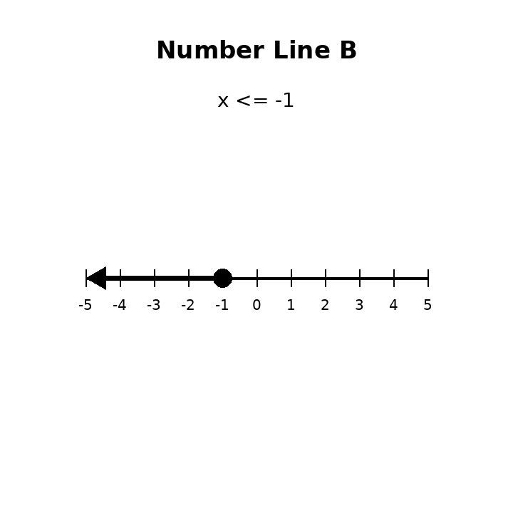

Practice Set 1.5.2
In the equation $C=7h+15$, $C$ is total cost. What could $h$, $7$, and $15$ represent?
Write an equation for: Five more than twice a number is $31$.
A streaming service charges $9$ dollars per month after a $6$ sign-up fee. The total cost is $60$. Write and solve an equation, then interpret the solution.
A student solves $4+6m=43$ and gets $m=6.5$. In a context where $m$ is the number of movie tickets, explain why the algebraic solution may not be a reasonable final answer.
Solve: $$n+8<20$$
Solve: $$4x\le 28$$
Determine whether $-2$ is a solution to $x\ge -2$.
Use Number Line B. Write the inequality represented by the graph.

Solve and graph: $$x-5\ge 9$$
A school bus holds at most $48$ students. There are already $17$ students on the bus. Write and solve an inequality for how many more students can get on.
A student solves $x+7\le 12$ and writes $x\le 19$. Identify the error and solve correctly.
A club has $100$ dollars and wants to buy shirts that cost $12$ dollars each plus a $16$ setup fee. Write an inequality, solve it, and revise the answer so it makes sense for whole shirts.
Which rule matches a starting value of $2$ and rate of change $4$?
- $y=2x+4$
- $y=4x+2$
- $y=x+6$
Use the table to identify the starting value.
| $x$ | 0 | 1 | 2 | 3 |
|---|---|---|---|---|
| $y$ | 5 | 8 | 11 | 14 |
Determine whether Representation B matches $y=4x+2$. Explain with evidence.

A student says the table and equation represent the same relationship. Determine whether the student is correct and justify.
| $x$ | 0 | 1 | 2 | 3 |
|---|---|---|---|---|
| $y$ | 3 | 6 | 9 | 12 |
Equation: $y=3x+3$